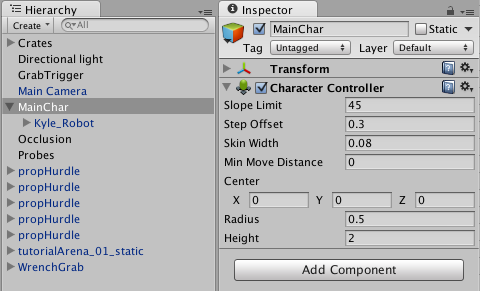
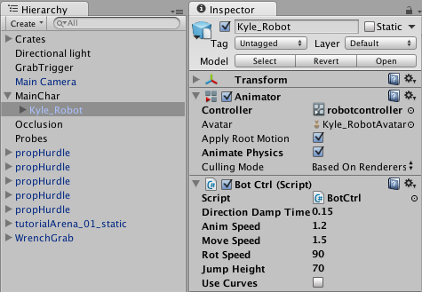
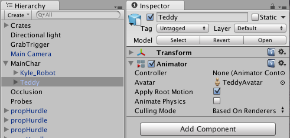
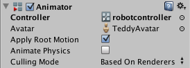

Retargeting of Humanoid animations
One of the most powerful features of Mecanim is retargeting of humanoid animations. This means that with relative ease, you can apply the same set of animations to various character models. Retargeting is only possible for humanoid models, where an Avatar has been configured, because this gives us a correspondence between the models' bone structure.
Recommended Hierarchy structure
When working with Mecanim animations, you can expect your scene to contain the following elements:-
- The Imported character model, which has an Avatar on it.
- The Animator Component, referencing an Animator Controller asset.
- A set of animation clips, referenced from the Animator Controller.
- Scripts for the character.
- Character-related components, such as the Character Controller.
Your project should also contain another character model with a valid Avatar.
If in doubt about the terminology, consult the Animation Glossary
The recommended setup is to:
- Create a GameObject in the Hierarchy that contains Character-related components

- Put the model as a child of the GameObject, together with the Animator component

- Make sure scripts referencing the Animator are looking for the animator in the children instead of the root; use GetComponentInChildren<Animator>() instead of GetComponent<Animator>().

Then in order to reuse the same animations on another model, you need to:
- Disable the original model
- Drop in the desired model as another child of GameObject

- Make sure the Animator Controller property for the new model is referencing the same controller asset

- Tweak the character controller, the transform, and other properties on the top-level GameObject, to make sure that the animations work smoothly with the new model.
- You're done!